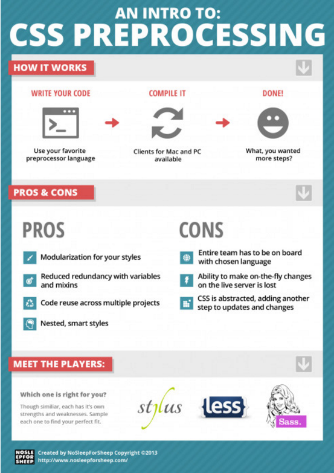

Nowadays, CSS style-sheets are getting larger, more complex, and harder to maintain. A good way to solve this cumbersome fact intrinsically attached to the CSS is the use of preprocessor style-sheet languages. On the top of the list, we find SASS and LESS extensions, which have lately been the target of an intense debate about among developers who want to find out which of these extensions is better for web development.
But, even though both SASS and LESS believers have their own valid evidence to choose one of these languages over the other, there is currently a tendency to believe that SASS is the “best” CSS extension in the market. For this reason, we have chosen to create a quick guide about how to use SASS and how to create some HTML elements using this preprocessor.
Preprocessing languages come in several flavors. With LESS and SASS among the most popular, preprocessors elevate humble CSS to something a little closer to actual programming with features like predefined functions for transformations, selector nesting, variables, and mix-ins. These more advanced operations work thanks to an added interim step in the development process where each LESS or SASS file gets translated or preprocessed into standard CSS. In summary, a CSS Preprocessor is primarily intended to make authoring CSS more dynamic, organized and productive. The next picture can give you a better idea of what a CSS preprocessor is and how it works:
Many Web developers have defined SASS as a more robust and mature preprocessor language than others like LESS or Stylus. The reason why some developers argue this is rooted on the particular SASS concise indented syntax. This indented syntax removes the need for semi-colons and braces. Also, it doesn't require to use the verbose @include to mix-in your mixins. Instead it uses the + operator which requires less typing and makes the code simpler and easier to read. Additionally, SASS syntax allows programmers to avoid typing plenty of braces as well as semi-colons to accomplish the tasks. On the other hand, SASS syntax forces clean coding since a small change in the “indent” can disturb the flow of an entire piece of code. Consequently, it forces keeping coding styles consistent. Furthermore, most developers like the fact that SASS has error reporting when syntax is wrong as a built-in feature. However, the choice of language mainly falls to personal preference. But the bottom line is that preprocessor languages have one common purpose: making writing CSS fun again!! #makeCSSfunAgain ;-)
In order to find complete documentation about the two CSS preprocessors mentioned above, we recommend to go directly to their official websites: SASS, LESS and STYLUS.